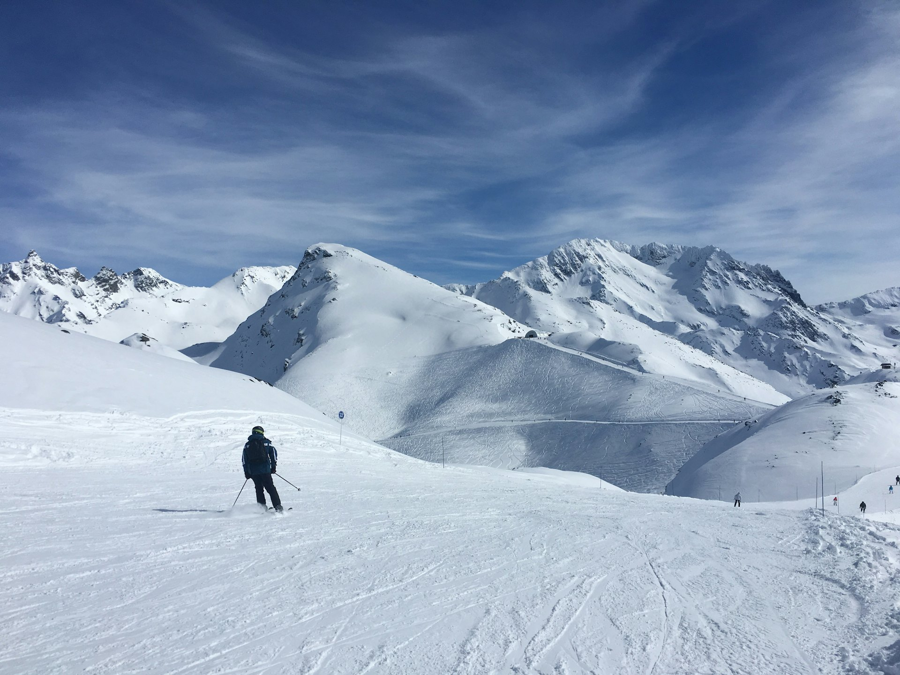
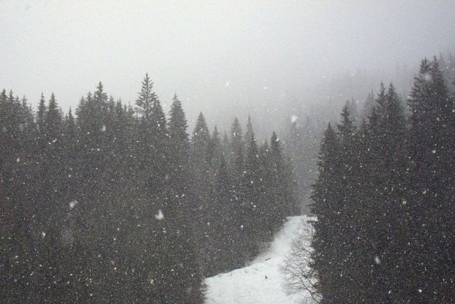

Skiing in the French Alps
Huge linked ski areas, charming villages and peaks above 3,000 metres: the 2026-2027 season starts on 21 November in the highest resorts.
Photo: Melvin Trav / Unsplash
The French Alps hold some of the largest ski areas in the world, across Savoie and Haute-Savoie. Each resort has its own character: high altitude and reliable snow in Val Thorens, luxury and perfect pistes in Courchevel, village charm in Megève, high mountains and mountaineering in Chamonix.
Many resorts can be reached without a car: by train to Moûtiers, Sallanches or Saint-Gervais, then by bus or shuttle. Each guide tells you when the resort opens, how to get there and what to do when you are not skiing. Opening dates always depend on snow.
Mont Blanc and Haute-Savoie
-
 Chamonix
ChamonixThe capital of mountaineering, facing Mont Blanc. People come to ski, but also to go up to almost 3,900 metres without being climbers.
-
 Megève
MegèveA real Savoyard village, horse-drawn carriages in the streets and tree-lined slopes facing Mont Blanc. Megève is the classic chic, gentle ski resort.
-
 Avoriaz
AvoriazA car-free resort at 1,800 metres with slopes into Switzerland. Avoriaz opens on 11 December 2026.
-
 La Clusaz
La ClusazA real Aravis village, 40 minutes from Annecy, with five areas to ski. La Clusaz opens on 12 December 2026.
-

ChâtelA Savoyard village at the head of the Abondance valley, linked to the Portes du Soleil. Opens on 19 December 2026.
Les 3 Vallées
-
 Courchevel
CourchevelPerfectly groomed pistes, an altiport and grand hotels: Courchevel is the most prestigious resort in the Alps, and also an excellent ski area for every level.
-
 Méribel
MéribelAt the centre of the 3 Valleys, Méribel lets you reach Courchevel or Val Thorens in a day, from a village built entirely of chalets.
-
 Val Thorens
Val ThorensAt 2,300 metres, Val Thorens is the highest ski resort in Europe. It opens first and closes last: from late November to early May.
-
 Les Menuires
Les MenuiresThe 3 Valleys at friendlier prices, with ski-in ski-out accommodation. Les Menuires opens on 5 December 2026.
Tignes, Val-d’Isère, Les Arcs and La Plagne
-
 Val d’Isère
Val d’IsèreA real mountain village at the head of the Tarentaise, a huge ski area linked with Tignes and the Olympic Bellevarde run. Val d’Isère opens in late November.
-
 Tignes
TignesThanks to its glacier, Tignes is one of the first resorts in France to open: from 21 November 2026. A safe bet for early-season skiing.
-
 Les Arcs
Les ArcsA TGV station at the foot of a funicular and a ski area rising to 3,226 metres. Les Arcs opens on 12 December 2026.
-
 La Plagne
La PlagneTen villages, long blue runs and the only Olympic bobsleigh track in France. La Plagne opens on 12 December 2026.
Isère: Alpe d’Huez and Les 2 Alpes


Hautes-Alpes
-
 Serre Chevalier
Serre ChevalierFour linked villages, runs through larch forest and open-air hot springs. Opens on 5 December 2026.
-
 Montgenèvre
MontgenèvreFrance’s oldest ski resort, linked to Italy. Montgenèvre opens on 28 November 2026.
-
 La Grave
La GraveA cable car to 3,200 m and France’s most famous off-piste. La Grave opens on 20 December 2026.
-
 SuperDévoluy
SuperDévoluyTwo linked resorts and 100 km of family runs. SuperDévoluy opens on 12 December 2026.